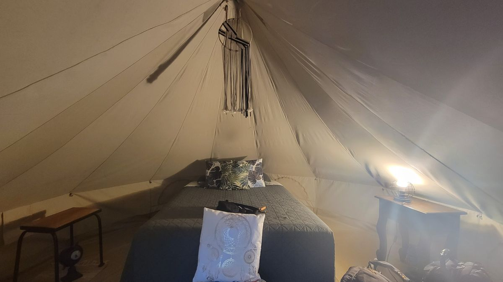
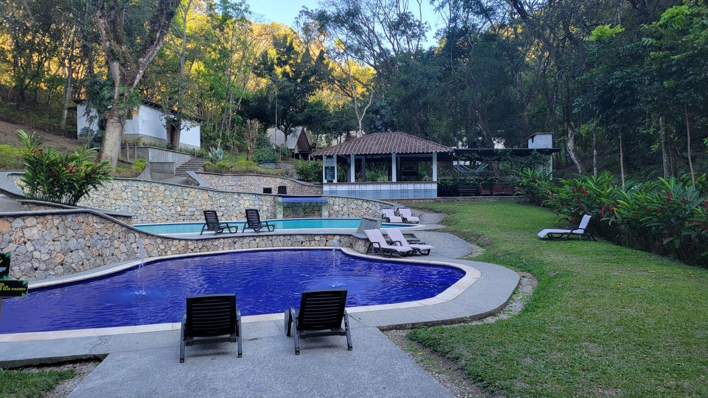
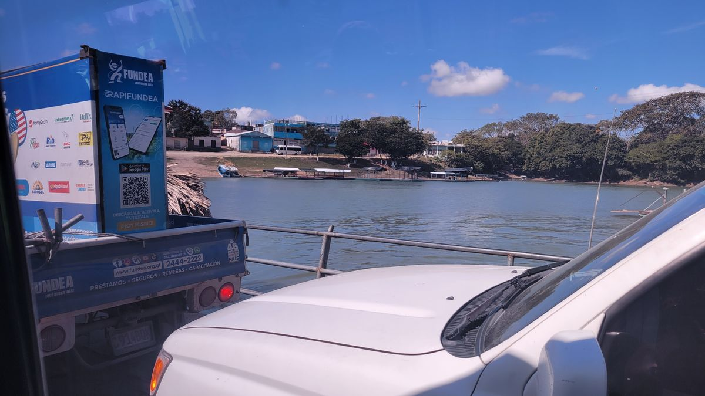
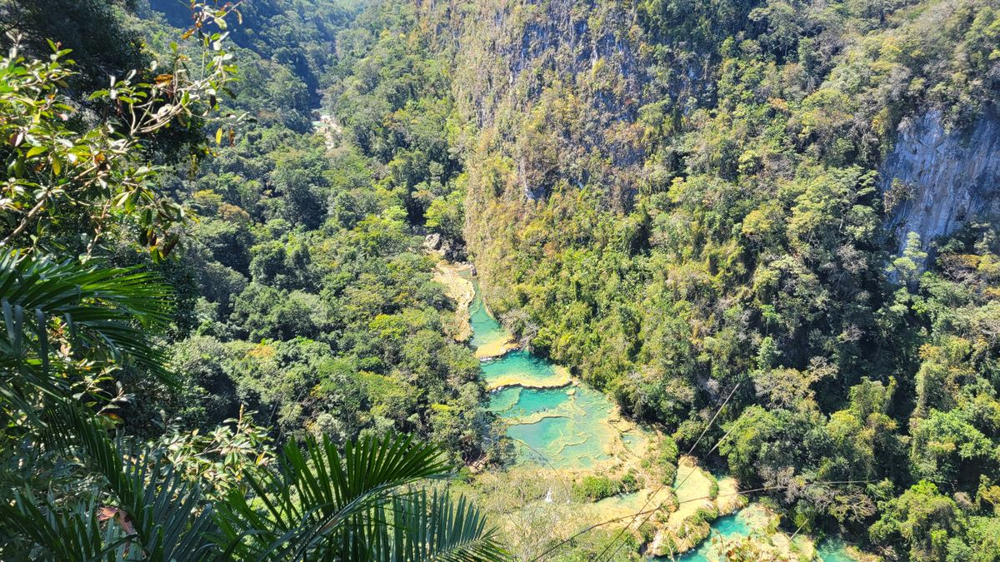

Semuc Champey
As I perused the different offerings of tour operators in Flores I couldn’t help but notice how every agency seemed to offer the same things. Admittedly, I hadn’t done much research on what one sees and does in Guatemala so I really had no idea what to look for. There were photos on all the walls for a destination called Semuc Champey. The photos were of a beautiful set of natural pools with green-blue water cascading into each other. The shuttle was about $25 and would be 8 hours. I figured this would be a great place to stop while eventually heading towards the colonial city of Antigua. I found a killer deal on a “glamping” experience on the adjacent city of Lanquin. A private tent in a “glamping resort” for $25 a night. When you’ve been spending countless nights in $10 a night hostels with bunkbeds, that may or may not even have hot water a private anything is always welcome.


There is certain places in the world where entire industries exist to support the budget backpacker style of travel. South East Asia trail, the “gringo trail” or Peru, Ecuador and Colombia and here in Central America, the Cancun and Southbound (none of these are official titles, just what I colloquialy call them for east of identification) are havens for people looking for a little more adventure than sitting at a resort and looking to do so on a budget. This became readily apparent in Flores as my fellow travelers were distinctly much younger and much more European. Lots of the people at my hostel were all on similar journeys. Fly to Cancun (flights are cheap there from most places in the western world) and slowly make your way south seeing various attractions and sights along the way.
The shuttle to Sumec Champey left Flores at 10 am, and I looked around to see that I was easily the oldest person there. By 10 years, at least. It was cool though. Everyone was chill and a long night of “twenty something year old partying” the night before kept most people sleeping well into the journey. As the crow flies, the distance between the two towns is less than 100 miles. Guatemalan terrain and much more primitive highways mean it will take a lot longer than in other places to traverse. Winding mountain roads and even a sketchy “ferry” ride across a river add up. After a few scheduled comfort stops at restaurants and a few unscheduled stops to let sick passengers handle their business we arrived early in the evening in the town of Lanquin.

The backpacker travel industry wasn’t more readily apparent than it was here. When we arrived the hostels in the city had their busses ready and waiting to take their guests back to their accommodations. Much like a package tour deal from those resort destinations that people on theses trips are usually trying to avoid. The hostels offer the same 2 or three tours in packages and when your done with your reservations they bus you back to the shuttle stop and send you your way to your next destination. My glamping resort was close enough to the shuttle stop they didn’t offer this service so I was on the old foot and leather express, less than a kilometer to where I would stay. But not before a busker with nearly flawless English approached me about tours.
My accomidations offered the same tours as everywhere else, but at a decent markup, mostly because of the “upscale” property they were ($25 a night is a lot in this part of the world). I planned to look into local tour agencies, but this man offered me a tour for the things I wanted to do at a decent price. I got his phone number and made the reservation via Whatsapp in the evening.
The most popular attraction in Lanquin, besides the pools of Semec Champey is the Ka’an Ba caves, immediate adjacent to the pools I saw in the photos the day prior. The advertisement for the caves seems rather innocuous, they tell you they will take you to the caves and will explore them with a local Mayan guide. Then you will go to some water falls that sit at the end of the pools where you will have some time to swim and enjoy the natural beauty of the area. Afterwards you ride in intertubes down the river where you have lunch, then hike to a magnificent view point of the pools, then hike down and spend the rest of your afternoon lounging in the warm blue green water of Semuc Champey national park. I had no idea what I signed up for.
I was picked up outside my resort that morning by a truck full of other tourist all standing in the back, there was no room to sit. We drove through the winding roads of Lanquin for about half and hour to the entrance to Ka’an Ba caves where we were immedialy accosed by about half a dozen local girls offering to rent us water shoes for 35 Quetzals ($4.50) for the day. I guess more people had done their research than I did, because they happily handed over the money. I just figured I would go barefoot if it was that bad.
They guided us to a changing area where we put out valuables into a group locker and headed up a set of stairs to the entrance of the cave. The guide repeated asked me if I was ok with my shoes getting wet. I said sure, now realizing the water shoes might have been a better idea. But, how bad could it really be? When I offered to take my shoes off, they said either my shoes or the water shoes no bare feet. Oh well.
As we stood outside the entrance, the guide brought us some sort of seeds. He crushed the pod, opened it and revealed a red substance which he then spread on his face. He explained how the ancient Mayan’s would used the stuff as natural mosquito and sun sun repellent. Then encourage us to do the same. We helped each other put the substance on our face and arms, what some people would call “appropriating culture”. Then the guide handed us a candle. A candle?

Yes, a candle. That will be cool I thought. This will be dark, and the candle will give a nice haunting ambiance as we walk through.
We walked towards the entrance and I hear the sound of rushing water. Hmm, must be a waterfall inside or something, that will be quaint. As the first people in out group go in I hear the splashing of water. Hmmm, ok. And sure enough about 10 feet later I’m face with a ledge and a pool of water waist deep. This is why I shouldn’t have worm my shoes. Oh well.
I jump into the waste deep water and follow the candle light of the group. The water gets deeper and deeper until it’s up to my chest. Some shorter people are already swimming and holding onto a cable that has been stretched across the surface for support. Just our candles and a few lanterns lighting the way. The sound of rushing water gets louder and louder. I now realize we are in a legit underground river.
They talked about this stuff in grade school science class. But, it didn’t dawn on me until I’m waste deep in water, no telling how far underground, that underground rivers can be legitimately a river with fast flowing water and waterfalls etc. We stopped at a spot where the guide used a headlamp to illuminate the surroundings so everyone can get a photo. I opted for the selfie, showing my half assed attempt at appropriating Mayan culture (with the permission of two local Mayan guides). We then had to climb a ladder, that the word sketchy does not even begin to describe, up a small underground waterfall. Oh yeah, the heads space at the top of this ladder, maybe 3 feet. So I’m ducking through the cave, trying to keep my candle lit and follow the group. Before I know it, I’m chest deep in water again facing another waterfall, maybe 10 feet tall and a rope hanging over the edge. Everyone else seens heistant, but my shoes are already drenched so I grab the rope and ascent up the water fall. I’m then told to jump. But only to the left. Why not right? I didn’t question. I make the jump with the applause of my group mates and then wait for everyone else to take their turn. Our guide then does his own jump and then moves to a small opening on the side of the cave. Our candles were collected before the jump so all we have it the light of a few lanterns and the headlamp of our guide. I just see a small hole maybe 3 feet across,
I’m in the back of the group so I don’t hear exactly what was wait, but see a girl walk in front of the guide. He directs her to place her hand and feet in a certain area. She then lets go and disappears like a (excuse my crudeness here, there’s really no other way to describe it) terd in an airplane toilet. We line up, and when it’s my turn I do as instructed and in a whiff I free fall about 10 feet into a lake below. The other group members who have already gone are are huddled away from the hole. Some also looking surpised and terrified about what just happened.
The rest of the cave tour was a blur. Maybe the excitement from the waterfalls and the hole, maybe we just made our way out peacefully through the river. I don’t remember. We eventually ended up right back where we started with everyone breathing a sign of relief that it was over with. We walked back down the stairs past the meeting point. We get handed a intertube like from a truck tire and follow a path to a beautiful waterfall. The guide the explains we can just hang out in the pool or we have the option to jump from a few overlooks adjacent to it. 3 meters, 10 meters and 14 meters. He tells us, dissapointingly, theres an 18 meter jump, but its off limits due to the river being too low. Shucks
So anyway, I make my way up to the 14 meter jump and look over. After the encouragement of a younger Austalian guy I jump feet first. Hitting the water from that high hurts and I decide to just enjoy the natural beauty of the waterfalls and encourage everyone else to make the dive.
After everyone had their turn, or multiple turns. We grabbed the intertubes from earlier and set off on a nice relaxing float down the river.
“Take now, pay later” local boys yell as they rush in into the river to sell us beers. I did not partake. The tubing was the first relaxing part of the day and we eventually headed off to another cave(with much less water), where a local woman had a small restaurant and served us buffet style.
The rest of the day wasn’t as exciting at the first half. The hike to the lookout area was arduous, but short. And the pools were as beautiful as the pictures had shown. The last event of the day thought would be without a little excitement. There’s a small air pocket under one of the small cascades in the pools. The guides showed us how to get in there without inhaling a bunch of water, then how to swim underneath for a safe exit.

We then had some free time to lounge around the pools before being trucked back to our accommodations in Lanquin.
The past few days had me feeling down and questioning my motivation level to continue the trip. I went off the Lanquin not knowing what to expect. Just knowing it was another spot along this backpackers trail, a good way to kill the time while I figured out what I really wanted to do. I got back to my tent that night and used the WiFi (remember, I was Glamping) to actually see what it out there about Semuc Champey. I found loads of Blogs and Videos going into detail about what would happened, the cave river, the hole drop, the 14 meter jump. I easily could have known exactly what to expect had I just did a quick Google search before hand. But, then it wouldn’t have been nearly as fun. It wasn’t about traversing an underground river, jumping off underground water falling into mysterious holes and jumping off increasingly higher overlooks. It was about the unknown, just living in the moment and going with the flow. Not worrying about a plan, or what to do, just letting things happen. I’m not really sure how to channel this new found feelings into the rest of my trip, but I think I’ve found a starting point.